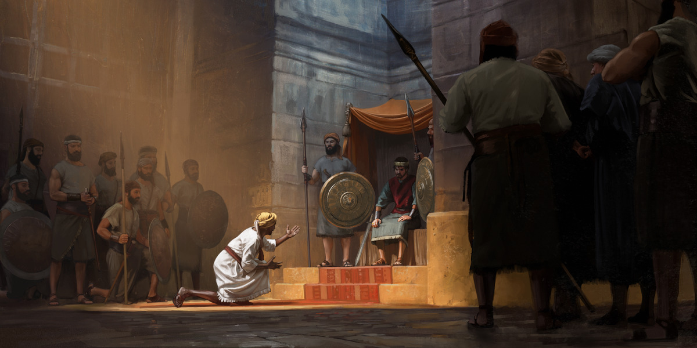

Patuloy Nating Tulungan ang Isa't Isa (v1.2)
Oct 2, 2026
INTRO [1.5 minuto]
Isipin po natin ito, mga kapatid: mamayang gabi, biglang nawalan ng kuryente ang buong lugar. Kinabukasan, wala pa rin. Walang signal, walang internet — hindi n'yo ma-text o matawagan ang kahit sino.
Sino kaya ang kakatok sa pinto n'yo para kumustahin kayo? {pause} At kaninong pinto kaya kayo kakatok?
Hindi pa po iyan ang malaking kapighatian. Pero base sa referensya natin, pagdating ng "malaking kapighatian," mapapahalagahan natin na may mabubuti tayong kaibigan na nagmamahal sa atin. Kaya ngayon pa lang, habang may panahon pa, patibayin na natin ang pagkakaibigan.
Ang tema po natin ngayong gabi: Patuloy Nating Tulungan ang Isa't Isa. Pansinin po ang salitang "patuloy." Hindi minsan lang. Parang alkansya — hindi mo ito mapupuno sa mismong araw na kailangan mo na ang pera. Hinuhulugan mo ito ng barya, araw-araw. Ganiyan din ang pagkakaibigan: ang matibay sa araw ng pagsubok ay binubuo araw-araw.
Kaya paano nga ba natin patuloy na matutulungan ang isa't isa? Tatlong paraan ang matututuhan natin sa halimbawa nina Ebed-melec at Jeremias: ipagtanggol, patibayin, at pasiglahin.
BACKGROUND [0.75 minuto]
Kinukubkob noon ng Babilonya ang Jerusalem, at nauubos na ang pagkain.
At sa gitna ng ganiyang sitwasyon, patuloy na sinasabi ni Jeremias ang mensahe ni Jehova: mabubuhay ang susuko sa mga taga-Babilonya. Hindi iyan nagustuhan ng matataas na opisyal. Kaya hiniling nila sa hari na ipapatay si Jeremias. At ano ang sagot ni Haring Zedekias? "Kayo na ang bahala sa kaniya."
Kaya inihulog nila si Jeremias sa imbakan ng tubig. At sabi ng Bibliya, si Jeremias ay "nagsimulang lumubog sa putik."
Sino pa kaya ang tutulong sa kaniya?
1 — Ipagtanggol ang iba gaya ng ginawa ni Ebed-melec [2.5 minuto]
Pero may isang lalaki sa palasyo na hindi nanahimik — si Ebed-melec, isang foreign official mula sa Etiopia. At diyan po natin makikita ang una nating aral: ipagtanggol ang iba gaya ng ginawa ni Ebed-melec.
Tingnan po muna natin ang larawan.

Sabi ng caption: "Si Ebed-melec habang nakikiusap kay Zedekias na tulungan si Jeremias."
Salamat po sa picture.
Ayon sa Jeremias 38, nalaman ni Ebed-melec na inihulog nila si Jeremias sa imbakan ng tubig. Kaya lumabas siya ng palasyo at pinuntahan ang hari sa Pintuang-Daan ng Benjamin. Ano ang sinabi niya? Habang binabasa natin ang teksto, isipin po natin ang eksenang nakita natin sa larawan. Buksan po natin ang Jeremias kabanata 38, bersikulo 9.
[Basahin ang Jeremias 38:9]
Jeremias 38:9
"O panginoon kong hari, napakasama ng ginawa ng mga lalaking ito sa propetang si Jeremias! Inihulog nila siya sa imbakan ng tubig, at mamamatay siya roon sa gutom, dahil wala nang tinapay sa lunsod."
"Napakasama ng ginawa ng mga lalaking ito." Direktang sinabi niya iyan sa hari.
Hindi siya nanahimik. Isinapanganib pa nga niya ang buhay niya para sa tama. Bakit kaya niya nagawa iyon? Maya-maya, si Jehova mismo ang sasagot.
Ano po ang matututuhan natin dito, mga kapatid? Para patuloy nating matulungan ang isa't isa, ipagtanggol natin ang iba — nang may tapang. Kahit sa loob ng kongregasyon, puwedeng may kapatid na nahuhusgahan dahil hindi alam ng iba ang buong sitwasyon niya.
Halimbawa: may sister na laging late at umaalis agad. May nagsasabi, "Dapat kasi manindigan siya." Ang hindi nila alam — hindi Saksi ni Jehova ang asawa niya, at hindi siya ang may hawak ng iskedyul niya.
Paano po natin matutularan si Ebed-melec dito? Puwede tayong magsalita nang mabait: "Alam n'yo, ang sipag n'yan. Ginagawa niya ang lahat para makarating." Isang pangungusap lang po — pero baka iyon na ang lubid na mag-aahon sa kaniya.
2 — Patibayin ang iba gaya ng ginawa ni Jeremias [3 minuto]
Pero hindi pa po doon nagtatapos ang kuwento. Naiahon na si Jeremias, pero bilanggo pa rin siya sa Looban ng Bantay. At ngayon, si Ebed-melec naman ang natatakot — sa puwedeng gawin sa kaniya ng matataas na opisyal.
Napansin n'yo po ba? Ang tumulong, siya naman ngayon ang nangangailangan ng tulong. Iyan po ang ibig sabihin ng "isa't isa" sa tema natin — hindi one-way ang tulong. Ngayon, ikaw ang tumutulong; bukas, baka ikaw naman ang tutulungan. At dito natin makikita ang ikalawang aral: patibayin ang iba gaya ng ginawa ni Jeremias.
Habang nakakulong pa si Jeremias, ipinasabi ni Jehova sa kaniya ang isang mensahe para kay Ebed-melec. Pansinin po ang pangako ni Jehova. Buksan po natin ang Jeremias kabanata 39, bersikulo 17 at 18.
[Basahin ang Jeremias 39:17, 18]
Jeremias 39:17, 18
"'Pero ililigtas kita sa araw na iyon,' ang sabi ni Jehova, 'at hindi ka ibibigay sa mga lalaking kinatatakutan mo.' 'Dahil tutulungan kitang makatakas, at hindi ka mamamatay sa espada. Ang buhay mo ang magiging samsam mo, dahil nagtiwala ka sa akin,' ang sabi ni Jehova."
Pansinin po: "mga lalaking kinatatakutan mo." Alam ni Jehova ang mismong ikinatatakot ni Ebed-melec. At narito ang sagot sa tanong natin kanina — bakit niya nagawa iyon? "Dahil nagtiwala ka sa akin."
Ano po ang matututuhan natin dito, mga kapatid? Kapag may kapatid na natatakot, huwag nating balewalain ang takot niya. Base sa referensya natin, hindi iyon binale-wala ni Jeremias. Kahit nakakulong pa siya, pinatibay niya ang kaibigan niya gamit ang pangako ni Jehova.
Sa pag-aaral natin noong nakaraang linggo, natutuhan natin na kapag nagbabasa tayo ng Bibliya, pag-isipan natin: "Ano ang itinuturo nito sa akin tungkol kay Jehova?"
Tingnan naman natin ang pangalawang larawan.
Isang sister na umiiyak, hawak ang litrato ng nanay niya — at ang kaibigang nasa tabi niya. Sabi ng caption:
"Pinapatibay ng isang sister ang kaibigan niya na namatayan ng nanay kamakailan lang."
Salamat po sa picture.
Baka iniisip natin, "Hindi ko alam ang sasabihin." Base sa referensya natin, puwede nating samahan ang kapatid, pakinggan siya, at sabihin ang isang tekstong gustong-gusto natin — gaya ng ginawa ni Jeremias. Ang pinakamahalaga, nandoon ka.
3 — Pasiglahin ang iba na sundin si Jehova gaya ng ginawa ni Jeremias [1.25 minuto]
Pero hindi lang si Ebed-melec ang tinulungan ni Jeremias. Balikan po natin ang kabanata 38. Matapos maiahon si Jeremias, ipinatawag siya ng mismong haring nagsabing, "Kayo na ang bahala sa kaniya." At dito naman ang ikatlong aral: pasiglahin ang iba na sundin si Jehova gaya ng ginawa ni Jeremias.
Inamin ni Zedekias na natatakot siya sa mga Judiong kumampi sa mga Caldeo, ang mga taga-Babilonya. Buksan po natin ang Jeremias kabanata 38, bersikulo 20. Pansinin po kung paano nakiusap si Jeremias.
[Basahin ang Jeremias 38:20]
Jeremias 38:20
"Pero sinabi ni Jeremias: 'Hindi ka ibibigay sa kanila. Pakisuyo, makinig ka sa tinig ni Jehova, sa mga sinasabi ko sa iyo, at mapapabuti ka at patuloy na mabubuhay.'"
"Pakisuyo." Nakiusap si Jeremias, at ipinakita ang pag-asa: "mapapabuti ka."
Kaya kapag may kapatid na nanghihina o natutuksong lumayo, hindi sermon ang kailangan niya. Ano ang kailangan niya? Isang taong mahinahong magsasabi: "Pakisuyo, huwag kang bibitaw kay Jehova. Mapapabuti ka." Iyan ang patuloy na pagtulong — kahit sa taong bumitaw sa atin.
CONCLUSION [0.5 minuto]
Ano po ang natutuhan natin ngayong gabi? Napapansin ni Jehova ang bawat tulong na ibinibigay natin sa isa't isa — gaya ng pagpansin niya kay Ebed-melec. Kaya tanungin po natin ang sarili: 'Sino kaya sa mga kakongregasyon ko ang kailangan kong ipagtanggol at tulungan?' Kung may pangalang pumasok sa isip mo, i-text mo siya bago ka matulog. Iyan ang unang barya sa alkansya.
Kaya ipagtanggol, patibayin, pasiglahin — patuloy nating tulungan ang isa't isa.
Mga checkpoint sa oras (sa sarili mong bilis ~118 salita/minuto: ~9:40)
| Simula ng… | Dapat nasa |
|---|---|
| Background | 1:25 |
| Punto 1 | 2:10 |
| Punto 2 | 4:45 |
| Punto 3 | 7:40 |
| Konklusyon | 9:05 |
Kung huli ka nang 30+ segundo sa Punto 2, paikliin ang halimbawa ng sister sa Punto 1 at ang paglalarawan sa Picture 2.
Kung may sobrang oras pa — karanasan (Punto 2, pagkatapos ng larawan)
Base sa referensya natin, may isang bagong bautisadong sister na sinulatan ng isang kapatid, at may teksto sa sulat. Makalipas ang mga walong taon, sumulat pabalik ang sister: "Kung minsan, gusto ko na pong sumuko at iwan ang katotohanan. Pero lagi ko pong naaalala ang tekstong isinulat ninyo at iyon ang nakakatulong sa akin na manatiling tapat." Isang sulat lang po, na may isang teksto.
Ano ang binago sa v1.2 (para sa speaker)
| Aralin | Refinement |
|---|---|
| 1 — Introduksiyon | Hook: "Isipin… nawalan ng kuryente at signal" + 2 tanong ("Sino ang kakatok… kaninong pinto…") → w19.11 ¶2 "ngayon pa lang" → tema → "patuloy" → 3 paraan |
| 3 — Mga Tanong | Bagong tanong sa Punto 1 ("Bakit kaya niya nagawa iyon?") na sinasagot ni Jehova sa Punto 2 |
| 4 — Introduksiyon sa Teksto | Bawat teksto: buod ng konteksto + "Buksan po natin" + kung ano ang papansinin; binabasa lang ang susing bahagi (38:9; 39:17, 18; 38:20) |
| 7 — Tumpak | "Etiopia," "hindi Saksi ni Jehova," "bilanggo pa rin sa Looban ng Bantay" (Jer 38:13); katuparan mula sa jr kab. 15 ¶16; "mabubuhay ang susuko" mula sa jr kab. 2 ¶22 |
| 8 — Ilustrasyon | Brownout na walang signal (hindi pa malaking kapighatian); alkansya = pagkakaibigang binubuo araw-araw; "lubid na mag-aahon" |
| 9 — Visual Aid | Picture 1 bago basahin ang Jer 38:7-9 ("isipin ang eksenang iyan") — inalis bago magbasa (guidelines #8); "Salamat po sa picture" pagkatapos ng bawat larawan; may tulay bago ang Picture 2 ("Ganiyan din po ang pagpapatibay sa ngayon") |
| 13 — Magagamit sa Buhay | Sister na napag-uusapan; samahan, pakinggan, isang teksto (¶18); "Pakisuyo, huwag kang bibitaw" |
| 14 — Pangunahing Punto | Ipagtanggol / patibayin / pasiglahin — sa intro, sa bawat aral, at sa huling pangungusap |
| 17 — Madaling Maintindihan | Ipinaliwanag ang Caldeo (taga-Babilonya), bakit nagalit ang mga opisyal, at bakit nakakulong pa si Jeremias |
| 18 — May Matututuhan | Malaking kapighatian: "ngayon pa lang" (w19.11 ¶2), "kasinungalingan at maling impormasyon" (¶19), "nandoon ka" (¶18) — ang artikulong pinagmulan ng reference ng Punto 2; Bagong punto: "Ang tumulong, siya na ngayon ang nangangailangan ng tulong" = isa't isa; tanong ng w26.07 ¶7 |
| 19 — Tumatagos sa Puso | "May mga kapatid kaya akong matatakbuhan — at matatakbuhan din kaya nila ako?" (intro + konklusyon); "magpakailanman" (w19.11 ¶19); Mga katangian ni Jehova (mapagpahalaga, makatarungan, hindi nagtatangi); "Iyan po ang puso ni Jehova" |
| 20 — Konklusyon | 4 pangungusap: napapansin ni Jehova → TANUNGIN ANG SARILI (eksakto) → i-text bago matulog → "magpakailanman" (w19.11 ¶19); huling linya: ipagtanggol, patibayin, pasiglahin |